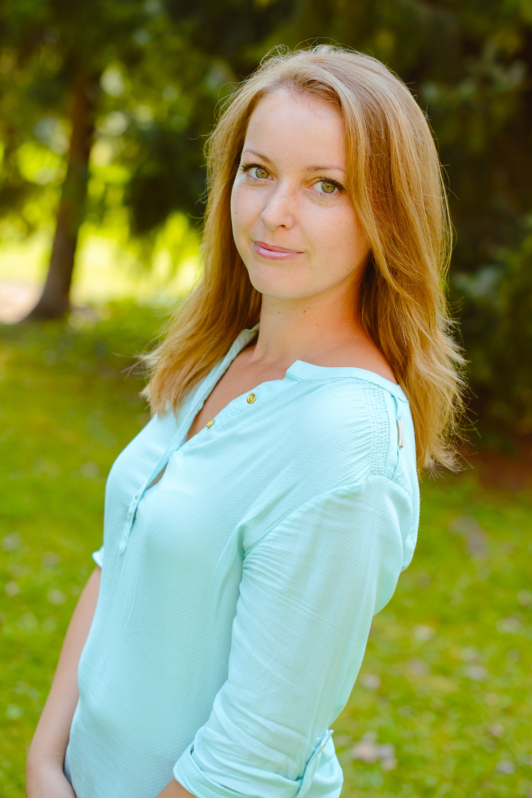
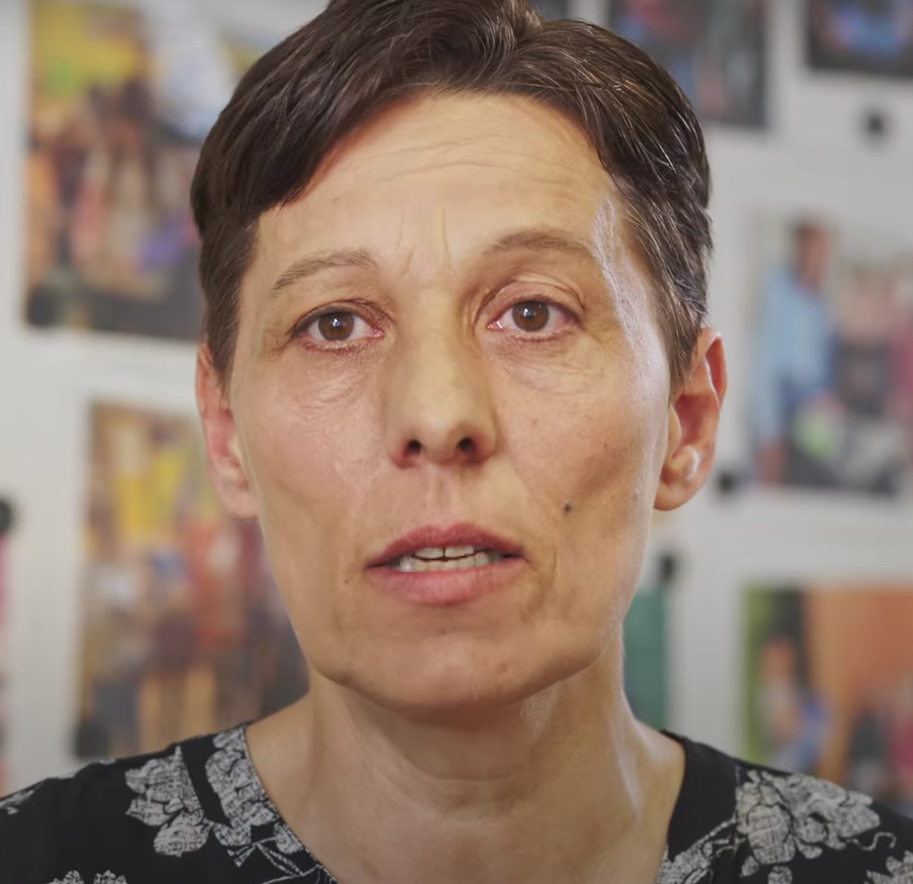
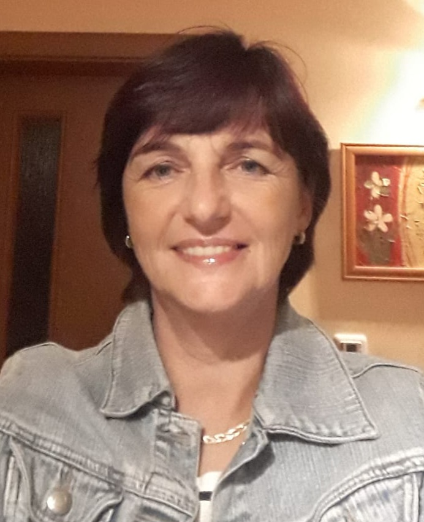
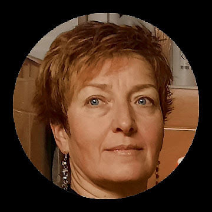
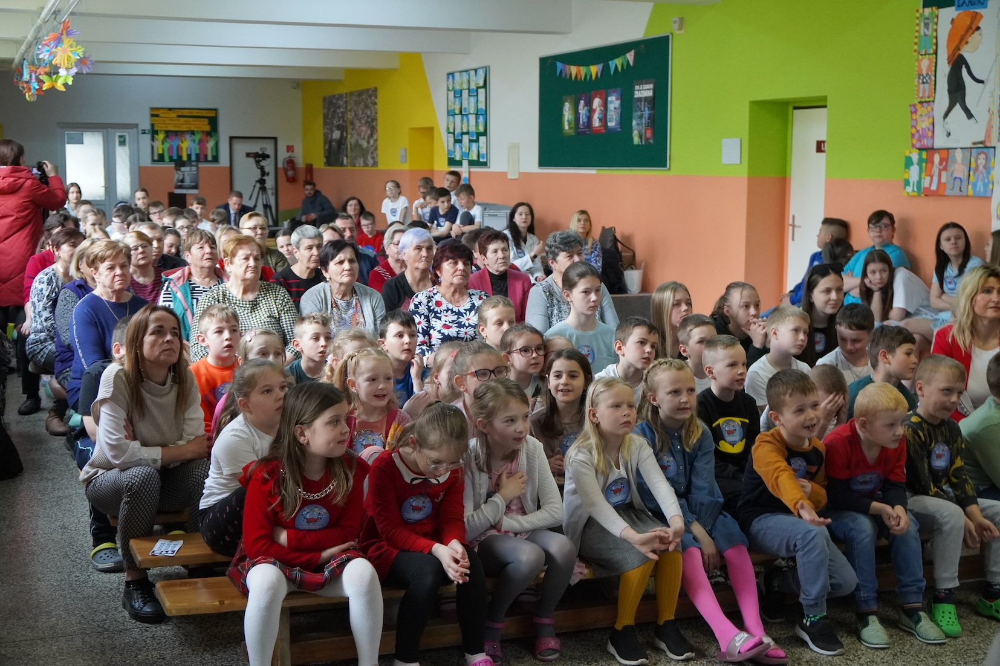

WHEN the first-ever FAST Heroes Summit was held in June 2022, Slovakia’s star shone very bright.
An elementary school in Liesek, in a small village in northern Slovakia, had made a clean sweep of the FAST Heroes leaderboard awards, winning the prizes for top school, top class and top individual. Their amazing teacher, Ms Lenka Reháková, was (appropriately) honoured with the Amazing Teacher Award, and elsewhere in Slovakia nine-year-old Dorotka Špulierová was recognised for being an example to her classmates.
FAST Heroes is an award-winning schools-based programme designed to boost public awareness of stroke. Now in its fourth year, its superhero theme continues to enchant and educate children around the world. Its impact has produced some real-life heroes including Slovak elementary schoolers Emka Horvathová, Samko and Petko Brnak (also among the honours in 2022), and Marek Bokoš, Teresa Bajsová, Ninka Ivančíková and Alexandra Czuporiová.
The FAST Slovak family now encompasses more than 1,100 schools and around 47,000 superheroes. Its goal for 2024 – which ws to involve 10,000 children – has already been surpassed, with 14,710 apprentice superheroes registered by the end of March.
Slovakia’s FAST Heroes community has also impressed with its creativity, designing a module specifically for secondary schools, and connecting schools with nursing homes – an idea that originated in Liesek and has now spread across the country.
A great deal of impetus comes from Lubica Fidesová, a public relations consultant with Grape PR and an indefatigable FAST ambassador. Last year her exemplary work with the campaign won the agency a prestigious PROKOP award in a competition organised by the Public Relations Association of Slovakia.
Lubica’s description of FAST Heroes rollout in Slovakia is an implementation masterclass, so grab your notebook before you continue reading.
Slovakia’s class act
“In the first and for us the most important phase,” Lubica says, “we focus on media coverage. We highlight the results achieved thanks to the project, such as international awards, or children who have rescued relatives after learning about stroke.
“We use radio and TV presentations, articles in the press, online social networks, influencers, and of course neuroscientists. We also connect with important institutions to elicit support for the project. Where we succeed, the result is widespread coverage that alerts schools that the next year of the project is about to start.
“In the next phase we focus on inviting schools, conducting webinars and explaining how to register correctly. During implementation we accompany and support the schools as much as possible. After the project is finished we decide which schools will receive a visit from the neurologists, again in with the goal of promoting the successes. The culmination of the whole project is the teachers’ summit and the announcement of the international results.
“We have realized the importance of collaborating with significant authorities and gaining the support of the Slovak Neurological Society. We have obtained the patronage of the Ministry of Education and the Ministry of Health and have started cooperating with the Operational Center of the Emergency Medical Service. Thanks to the support of these institutions, we have become a credible partner for schools, offering a project worth engaging in.
“One of the greatest acknowledgments for us is the direct involvement of doctors and neurologists from across Slovakia in activities at schools. This increases the credibility and interest from teachers who are participating in the project. During school visits neurologists teach the children about stroke, and the children prepare a programme for the doctors, including singing a song. Grandparents also attend these meetings which is an opportunity for the doctors to talks about the risk factors for stroke.
“We always try to publicize these activities and when they are reported in the media, children and teachers from all over Slovakia feel part of a significant project that has a great impact on society, and they feel part of the FAST family.
“The idea of visiting nursing homes came up last year and we agreed with Lenka Reháková that it would be very beneficial. The children prepared a nice program for the grandmas and grandpas, brought them brochures about the disease, and sang the FAST Heroes song. This example has inspired other schools to also introduce the concept.
“Lenka Reháková remains one of our most prominent ambassadors. Her enthusiasm and active involvement have also encouraged other colleagues and parents to participate in the project. I am proud that we have so many amazing teachers in Slovakia And I am happy that I have the opportunity to get to know them thanks to FAST Heroes.”
Ripple Effect
Working with the FAST Heroes campaign is exactly what she loves to do, says neurologist Dr Martina Chovancová. And last year a stroke patient admitted to her hospital delivered an poignant insight about how knowledge spreads.
“I am a specialist in the 2nd Department of Neurology at the University Hospital in Bratislava. Usually I’m stationed at the ICU, treating acute stroke patients, or communicating with rescue workers when they are at the patient's home. When they arrive, I select patients who are to be treated with intravenous thrombolysis.
I always wanted to do something more than treat patients and do more in prevention, and before this project I did some presentations about lifestyle and risk factors. When FAST Heroes came to Slovakia I was eager to participate. It is exactly what I love to do.
I perform tasks within the campaign, organize events for children and their parents and grandparents, and sometimes I give interviews to local and statewide media.
Last year I was the leading specialist physician of the campaign here in Slovakia. This gave me a lot of media exposure and indirectly lead to the story I am about to tell.
In late 2023, an instance of a wake-up stroke occurred. Despite prompt presentation at the hospital within the therapeutic window, the ischemic insult had progressed beyond the point where intervention could be effective.
This patient remains in a critical but stable condition, characterized by profound hemiparesis and aphasia. He is currently residing in a retirement home under intensive care.
While he was in hospital his adult daughter recognised me from an interview that had appeared on the news website aktuality.sk in February 2023. She told me she had helped save her father’s life as a result of reading this article. She’d been able to recognise the symptoms of a stroke and instruct her father over the phone to call an ambulance.
Despite the unfortunate outcome, the daughter found solace in knowing that we had done everything within our power. She expressed gratitude for being equipped with knowledge about stroke symptoms, which made her feel safer.
She has shared her experience with friends and acquaintances, spreading awareness about the importance of recognizing stroke symptoms. She has even relayed the story to her son’s teacher, encouraging them to participate in the FAST Heroes campaign at his school.

Teacher Knows Best
Some of Slovakia’s dedicated teachers share their experience with FAST Heroes.

Monika Kaplárová
“I signed up with only one class as I didn't know ‘what I was getting into’. I now know that next year I will involve as many pupils as possible. I hope this project will become known to the general public and will succeed in mitigating the effects of the disease by providing information. Personally, I will recommend this project to my colleagues and people in my neighbourhood.”

Andrea Gombariková
“The Fast Heroes project teaches children about empathy, love and, most importantly, practical life-saving skills in the event of a stroke, one of the most common reasons they lose their elders. They pass on the knowledge they learn to their loved ones so they’ll know how to react in a life-threatening emergency, and that’s why it all makes sense.”

Martina Bajzová
“My fourth graders were very enthusiastic about the activities of the little hero rescuers. The motivational characters, Tomi, Fero, Adam and Sofia, accompany them through learning about all the symptoms of a stroke. Even after school they continue to play the role of paramedics in the school club and practise possible stroke situations and their solutions.
The feedback from parents has been excellent. The parents themselves were surprised that they knew so little about stroke and that their young children had such precious information to pass on to their grandparents. So they were very willing to participate and have this precious information explained to them, and they captured it in photographs with joy and gratitude.”

Jana Fajnorová
“I would recommend the FAST Heroes project to other teachers. It is creatively designed and non-violent. The project caught my attention with its originality and excellent handling of such an important topic. The children enthusiastically watched educational videos and also had fun with the animated characters. They really liked this ‘experiential teaching’ and enhanced it with their own dramatization of a ‘crisis situation’. They will definitely remember all the important information forever. At the same time, the project contributed to strengthening the group and the sense of belonging.

Eliška Reptová
“As a teacher I appreciated the flexibility to adapt the materials and spend as much time on the topic as needed. The project not only provided basic information about stroke but also raised awareness among children that not only their parents but also their grandparents could be at risk. Creating an information leaflet and discussing symptoms and prevention helped some students build closer relationships with their grandparents. Shortly after the project, a close relative of one student had a stroke. Because of the discussions at home, the student’s family recognized the symptoms and provided appropriate first aid.”

Each One Of Us Can Save A Life
Two years after her class of third-graders topped the FAST Heroes leaderboard, Ms Lenka Reháková of Liesek Elementary School has advice for teachers joining the program.
How many children have you introduced to the FAST Heroes project since it started?
It's hard to count, with a current class of almost 600 kids. As a school we have been involved every year since the project began and we remain involved in year four. It was like a ‘tsunami’ in Liesek. In the first year of the campaign only the primary school students (113) were involved. In the second year, 118 kindergartners also joined, and 247 secondary students in year three. I believe that if something works, we should talk about it and pass it on. That’s why I’ve talked about the FAST Heroes project with my colleagues in school, with the kindergarten teachers and also with teachers from other schools. And thanks to the Slovak media, many schools and teachers have learned about the FAST Heroes project and about strokes and their symptoms.
Is your original group of 112 superheroes still involved with FAST Heroes?
My former pupils with whom I started the FAST Heroes project are now fifth-graders. Those who are still involved attend our Young Rescuer Interest Group where I teach primary and secondary students about first aid. These students, who are between the ages of eight and 15, are learning how to call the ambulance and what to do in life-threatening situations including stroke.

Are there any differences in how you present the material now from when you began?
There certainly are. The first and second year, my students and I learned about stroke and its symptoms through various fun activities. In the third year we changed our strategy and wanted to share the knowledge we had gained with others, especially younger pupils and children in kindergarten. So over the course of five weeks my pupils found themselves in the role of teachers. We also passed on the knowledge about stroke to the grandparents who visited our school and also when visiting the elderly at the Charity House of St Francis in Trstená where the students taught them about stroke symptoms. After the presentation they read FAST Heroes workbooks, spoke with the pensioners, laughed together and had a nice time. Finally they sang and danced FAST Heroes song.
How has your experience with FAST Heroes impacted you personally?
I am increasingly aware that if my efforts to spread stroke awareness can save even one life, then it is all worthwhile. I would like to encourage all of us to be mindful of the people around us. Each one of us can save a human life. During the visit to the elderly in Trstená we experienced joy and mutual giving. In this mutual giving we found that the more we gave, the more we received – because older people are like living books, full of wisdom and life stories.
If you had to give one piece of advice to a teacher who is implementing the campaign for the first time, what would that be?
I would say: You are doing a great job of raising awareness about stroke prevention and treatment. Don’t give up. You are not alone. You are the part of FAST Heroes family. I admire your dedication and passion for the campaign. You have the power to save lives by educating children and through them their parents and relatives about the signs of stroke and how to act fast. Thank you for being part of the FAST Heroes campaign. You are an inspiration to others who want to make a positive impact in the world. Remember that every student you reach, is a potential life-saver.